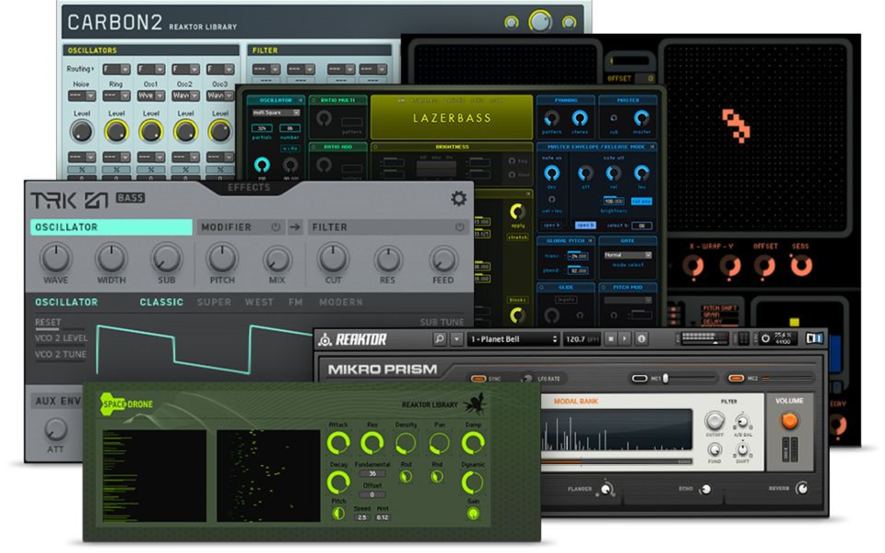

VSTs
Virtual Studio Technology (em PT-BR: Tecnologia de Estúdio Virtual), ou simplesmente VST, é uma interface desenvolvida pela Steinberg e lançada em 1996 que integra sintetizadores e efeitos de áudio com editores e dispositivos de gravação de som digitais. O VST utiliza processamento de sinal para simular o hardware tradicional de estúdio de gravação com software. Existem milhares de plugins desenvolvidos sobre a plataforma VST, que é suportada pela maioria das aplicações de áudio; notavelmente, o suporte a VST é padrão em aplicativos DAW. A tecnologia pode ser licenciada diretamente da Steinberg.
A sigla VSTi é normalmente usada para diferenciar um plugin de efeito de um plugin de instrumento virtual, este tendo a letra "i" adicionada ao fim da sigla.
Fonte: Wikipedia
Sugestões de VSTs
OBS: Todos os plugins incluidos são plugins que eu utilizo
Cymatics Origin
Preço: Gratis
Origin é um plug-in vintage/lofi criado para fazer suas samples soarem como se tivessem saído de um gravador antigo.
O botão principal é um resampler/bitcrusher com dois filtros especiais para fazer com que suas samples soem “subaquáticas” (esse efeito pode ser ouvido com frequência nas músicas do Drake)
Os outros quatro botões são Tape Saturation, Noise, Movement e Chorus. Usando esses 5 controles poderosos, você pode instantaneamente dar às suas samples uma vibe vintage.
*O Origin é apenas 64 bits
Fonte: Cymatics
Polyverse Wider
Preço: Gratis
O Polyverse Wider dá a qualquer sinal mono a ilusão de uma imagem estéreo expandida com uma largura impressionante. É um plug-in ampliador estéreo exclusivo que é completamente "compatível com mono" - qualquer sinal que tenha sido ampliado sempre permanecerá em fase consigo mesmo, mesmo quando for somado novamente em mono. O melhor de tudo é que o Wider é um plug-in totalmente gratuito!
Algumas de suas funções:
- Aumente a imagem estéreo de qualquer sinal mono em até 200%
- Mantenha a compatibilidade mono total
- Ignore as baixas frequências do efeito
- Verifique a compatibilidade mono
- 100% GRÁTIS
*O Wider é apenas 64 bits
Fonte: Polyverse
Cableguys PanCake
Preço: Gratis
PanCake é um plugin gratuito para a maioria das modulações de panning flexíveis.
Você pode construir suas próprias curvas de modulação. Elas podem ser facilmente desenhadas usando pontos de controle suaves ou rígidos, produzindo assim transições suaves ou curvas acentuadas na forma de onda.
O LFO do PanCake pode ser sincronizado com a sua DAW, desde uma modulação rápida de nota 1/128 até 32 compassos. Ele também pode ser configurado para execução livre de 0,02 Hz a 5,24 kHz e pode ser acionado via MIDI.
Uma exibição precisa do canal de volume esquerdo/direito fornece um controle visual útil.
O melhor de tudo é que o PanCake é totalmente gratuito! Sem login e sem necessidade de registro.
Fonte: Cableguys
Vital
Preço: Gratis/$25/$80
Vital é um sintetizador virtual que permite criar sons complexos usando uma variedade de modulação fontes e técnicas. Destina-se a fornecer um fluxo de trabalho flexível e uma grande variedade de possibilidades acústicas.
O sintetizador vem com uma vasta biblioteca de wavetables de alta qualidade, e você também pode criar suas próprias formas de onda desde o início ou importando audio arquivos. Esta poderosa ferramenta inclui também uma variedade de fontes de modulação que podem ser atribuídas a quase todos os parâmetros do sintetizador, como envelopes, LFOs, sequenciadores passo a passo e muito mais.
Além de suas capacidades de síntese, o Vital também vem com diferentes efeitos, como ressonância, atrasoe distorção, que pode ser aplicado a osciladores individuais ou a todo o patch. Esses efeitos podem ser ainda mais modulados para maior profundidade e complexidade.
Comparado aos demais sintetizadores do mercado, o Vital se destaca por sua facilidade de utilização e intuitivo interface. O sintetizador é projetado para ser utilizado tanto por iniciantes e usuários profissionais e tem vários presets que destacam suas possibilidades sonoras.
Fonte: Audiopluginsforfree.com
XferRecords OTT
Preço: Gratis

OTT é um interessante compressor multibanda que oferece processamento ascendente (compressão ascendente) e descendente (compressão descendente)
O plugin oferece três bandas de processamento dinâmico que podem atenuar ou amplificar o sinal em relação ao threshold. A interface do usuário não é imediatamente autoexplicativa, mas uma vez que você a entende, é fácil obter resultados.
A chave é que o ponto laranja nos medidores mostra o nível de pré-efeito e as barras ciano mostram o nível pós-dinâmica e as barras pretas nos medidores são os controles de limite. É uma recriação de uma configuração popular de compressor multibanda agressivo para cima/baixo usado por muitos produtores de dubstep e electro.
Caracteristicas:
- Profundidade do botão para dimensionar a quantidade de compressão.
- Knob time para dimensionar os tempos de ataque/liberação de todas as bandas.
- Knob In Gain & Out Gain (ganho de entrada e saída).
- Botão Upwd% (compressão ascendente) & Dnwd% (compressão descendente).
Fonte: Futurebeats.com.br